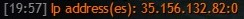
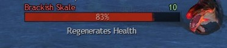

A collection of Guild Wars 2 tips, guides and tools
Tips
There are many tricks in Guild Wars 2 that are not obvious, not documented properly and can take a
long time to figure out. This is an attempt to collect as many as possible and order them. For this
reason we have two attributes for each tip: usefulness and importance. Both scale from 5 (very
useful/important) to 1 (not much useful/important).
Usefulness is a selfish measure and shows you how much useful this tip is to you.
Importance on the other hand is a measure of how much other players rely on you to know this.
It is very possible that we have forgotten a trick or maybe don't even know them. There may also be
mistakes or outdated information. Any contributions are welcome, feel free to create an issue or even make a pull request.
Beginner Tips
Defiance bars
Defiance bars, also known as breakbars are most commonly found on champions and legendary
enemies. Appearing as a second bar under the enemies healthbar, it is damaged by using crowd
control effects (often abbreviated as CC). As it would make no sense to allow a boss to
be permanently stunned or blinded, this bar is the equivalent of a healthbar for crowd control
skills.
A damageable defiance bar
When the bar is teal, using crowd control skills damages the bar. Depleting it – breaking the
enemy – will stun the enemy temporarily and usually apply a buff that increases
incoming damage to the enemy. The bar may be slowly regenerating while it is teal.
A defiance bar after the enemy was hit by a crowd control skill
When the bar is orange and filling up, it is recharging. The enemy is still immune and using
crowd control skills now will be a waste as they are ignored. Once it fills up, the bar will
become teal again and you can break the enemy again.
A defiance bar shortly after the enemy was broken, starting to recharge. You can
see the buff indicating the enemy is now stunned.
When the bar is gray it is locked and crowd control effects are ignored as long as it is in that
state.
A locked defiance bar. This enemy is completely immune to crowd control while it
is not doing its Overhead Smash attack.
What is a crowd control effect?
There are two types, "hard" effects, which damage the defiance bar instantly (e.g. Stun, Knockdown,
Daze...). These are effects that will stop you from attacking/moving completely, instantly. The
damage depends on the type and the duration. You find see the defiance bar damages and skills
for your class that are hard CC on the wiki.
Soft CC are conditions which damage the defiance bar over time, each has a good reason to do so,
they would be too strong if they actually affected the boss enemy.
Condition
Why is it ignored
Defiance bar damage per second
Fear
You can't attack and move when you are feared
100
Taunt
You are forced to only attack one enemy with autoattacks
75
Immobilize
Stops you from moving
50
Slow
Slows you and your attacks
50
Chilled
Slows you and your cooldowns
33
Blinded
Causes you to miss
20
Weakness
Causes your hits to glance (50% damage), slows endurance
regeneration
20
Cripple
Slows you down
15
Dodging and evading attacks
Guild Wars 2 has a combat system in which completely avoiding damage is by far the most
efficient strategy. Many skills are evades, blocks and similar. You can dodge as long as you
have enough endurance which makes you invulnerable to all attacks. You can apply Aegis,
a boon that blocks the next attack you get hit by.
Being good at avoiding attacks allows you to play with more offensive gear. Most attacks have
tells you should be looking out for; if you see an enemy lifting their weapon they are likely to
do an attack of some kind. Many attacks have telegraphs on the floor that show you
where the attack will land. Dodging attacks is very important if you want to survive in higher
end content. Tanking every single hit makes it either harder for you to survive or harder for
healers to sustain you.
Food and utility consumables
Food and utilities are consumables that can be used to temporarily increase your stats. Eating
Food grants a Nourishment effect, using an Utility grants an Enhancement effect. You can only
have one of each at the same time, using another food/utility consumable will overwrite the effect.
The amount of stats gained from food is non-trivial and it is common decency to use food and
utilities in end-game content. The best food is usually rather expensive, but there are
typically cheaper variants.
There are also many very cheap foods that are a good choice for playing in open world. Check the wiki list of foods and utilities and see for yourself if
any of those would be helpful to you. If you are leveling a character, you may be interested in
the extra experience gain as well. Some foods offer a higher experience bonus than others.
Deposit to storage
The account vault not only contains a bank that allows you to store any items, it also
contains a Material Storage that can by default store up to 250 of each material
(may be increased by purchasing Storage Expanders).
Unlike the bank, any materials in your inventory can be deposited to the storage from any
place in the world. If you right-click a material, you can then click Deposit
Material to deposit it to the Material Storage. If the option is gray, then your
material storage for this item is full.
The option to deposit a material to material storage.
You can also deposit all materials by clicking the gear icon in the top right of the
inventory and selecting Deposit All Materials. This will ignore items in invisible
bags and items that won't fit into the storage.
The option to deposit all materials in inventory.Map instances and the LFG system
With the introduction of the megaserver system, worlds are now only a WvW distinction.
Instead, there are now multiple instances of the same map that anyone from the same region can
join. The regions being EU and NA. While there is a Chinese version of the game, that one is
completely separated, including the trading post and contains more pay-to-win features.
If you can't find your friend, they are likely in a different instance. If you are both in the
same party or squad, you can right click on your friend and choose to Join them in
their map. That will move you to their instance. You can see the IP address of the server for
the current instance by using the /ip command.

The ip address of an instance
If an instance gets too small, everyone gets a prompt to volunteer to leave (and get a bonus
buff) or get kicked in an hour. If an instance is quite full, players will instead join another,
potentially new instance when they enter the map. It is still possible to join players through a
party or squad. At some point, the map fill completely and it is also impossible to join through
that. At that point you can try spamming the join button, there is no reservation so when one
player leaves you can take their place.
The Looking for Group window is an interface for finding groups or squads. These may potentially
be in another instance and can be used to move to it. In fact, it is common to taxi
people into an empty map to help with events and this way you can participate even if your map
instance was hopelessly empty.
The looking for group interfaceLinking items, skins, waypoints, skills
If you hold Shift and left-click on an item, a hoverable link will be inserted in your
chatbox. If you hold Ctrl instead, a message containing only the link will be sent
instantly.
Hovering over a linked itemHovering over a linked waypoint. Clicking will open the map at the waypoint.Playing story instances with friends
All story instances can be played with other players in your party. The enemies usually do
not scale with more players so having others help you can be very useful for some achievements
and instances. Simply enter the instance and other players in your group in the same map will
get a prompt to join you. If you are at the same instance in your story as the instance owner
you will get a prompt to accept progress.
In some instances you get a special role as a guest, in many you won't be able to talk to
most NPCs and you will only see some of the dialog of the instance owner.
Bug warning
Do not accept progress in Personal Story missions where the instance owner
chooses the next path to take. You will not get the same choice. In some instances,
you will in fact get no choice at all and a huge part of your story will be skipped
altogether (most notably "your biggest fear" part of the story). This will lead to
random NPCs appearing in the story who you won't even know at all.
Because of changes to the story system in Living World Season 2, this is not a problem
in any other content than the Personal Story that spans from your level 10 to 80. No
expansion stories or Living World instances are affected by this.
Separating item stacks
If you hold Alt while dragging items in your inventory, you will be prompted to input a
stack size, this way you can split stacks into multiple.
Invisible Bags
There are multiple types of bags available. With some, specific items will fix those bags
before other empty spaces, but the most useful one is an invisible bag.
Items in an invisible bag cannot be sold, automatically salvaged, do not appear in vendor
menus and will not move if your inventory is sorted. This allows you to safely store armor,
unidentified gear and similar items you may not want to accidentally destroy.
General Tips
Salvage All
The menu offered when right-clicking on a salvage kit
Right-clicking on a salvaging kit or tool allows you to automatically salvage all items of
specified qualities.
Opening all containers and using all consumables in a stack
Right-clicking on a stack of containers or consumables usually offers an option to Use
all. This process will stop if your inventory gets full.
Opening all bags in a stack is offered in the right-click menu
Consuming all luck in a stack is offered in the right-click menu
Bind the Special Action to an easy-to-press button.
Special Action skills are not only used for many mechanics in raids and fractals, they are
also very useful in the open world and in story missions. You need to be able to press it
easily and reliably in group content and it won't hurt to have it easily accessible for
yourself as well.
An official wiki is hosted by
ArenaNet that any player can contribute to.
The wiki contains information about maps, skills, items... pretty much anything in the game.
It is written and maintained by players.
If you are willing to contribute, you may also be interested in the On Wiki of Gold
project. On Wiki of
Gold is a project that rewards you with in-game gold and gems for contributing to
articles that are a part of the listed sets on its page.
The /wiki command
If you type /wiki <keyword> command in the chat window, the game will open
a browser window with the wiki page for the keyword you type in.
This allows you to quickly find out information about game content.
Using /wiki to open the wiki page for Verdant Brink
Not only can you search using text, you can also search by linking items, skins, waypoints,
skills and similar. This brings you to the corresponding Guild Wars 2 Wiki article if it
exists.
Using /wiki to open the wiki page for an item by linking it
You can also search the wiki in other languages by prepending the language code and a colon,
like this: /wiki de:Guild Wars 2.
There are many useful pages you can reach quickly from the game this way:
/wiki ET - Event Timers
/wiki qal - Quick access links
For more details check out the wiki page for this command
Finding unfinished POIs/Hearts/Vistas on the map by hovering
Hovering over the Point of Interest/Heart/Vista counts on the map shows unfinished ones on the
map or scouts in case you don't have the relevant part of the map discovered.
Hovering over the Point of Interest count shows an undiscovered POI.Using weapon swapping to speed up Core Tyria renown hearts
Many renown hearts in core maps (that is, maps that existed before HoT and PoF expansions and
Living World seasons 3) contain tasks where you interact with items such as collecting items from
the ground, repairing things...
The progress to the heart is added immediately when you interact and swapping weapons interrupts
the channeling skill, which allows you to finish those hearts faster.
Newly introduced renown hearts are designed with this workaround in mind, so this will
usually not work there.
Instantly opening reward chests
Right-clicking on a reward chest on the side of your screen will open them without showing any
window and just add the rewards to your inventory instantly. This does not work with any chests
with a selection of rewards.
Right-clicking these chests puts the reward in the inventory instantly.Right-clicking skill slots to select skills
You can right-click utility and elite skill slots to bring up the menu to swap to another skill.
This is significantly easier than clicking the small arrow.
Double-clicking waypoints teleports you instantly
Double-clicking on a waypoint on the minimap or on the world map will teleport you instantly
without having to confirm the cost (as long as you are not in combat).
Left-clicking on a commander icon allows you to join their squad
Left-clicking on a commander icon on the minimap or on the world map will show you a context
menu that contains a Join Squad option.
The Join Squad optionThe /sqjoin and /join commands
/sqjoin <name> is a command for joining a squad.
/join <name> is a command for joining a party.
These commands allow you to join a squad or a party if you specify either a character name
of someone in the squad/party or their account name. You can use a different character name
than the character they are logged in now. The /sqjoin command only works if
the squad has a commander.
Guild Hall boosts
The Tavern in Guild Halls offers 24-hour boosts for free. Selecting one will overwrite the
previous one, so only one can be active at the same time. Boosts include a Magic Find
increase, a PvP/WvW reward track rate increase, experience/karma gain and others. You can
find a list on the wiki.
The boost percentage is dependant on guild hall upgrades so a higher level guild may offer
better boosts.
The Mentoring BadgeThe mentor tag as it appears on the map
One of the first Core Tyria masteries provides access to a mentor tag. This tag was intended
to be used to mark yourself as a mentor for new players. Outside of starting maps it is
usually used as a cheap alternative the the commander tag when you need to show a location
on the map. It has no access to the commander squad features, but it is still visible on the
map for anyone in the same instance. You can activate it in the party interface or toggle it
with the /mentor command.
Please do not mislead new players in starting maps by using it there and then not helping
them if they ask.
Hovering over Trading Post total price when selling
Hovering over the Total Price when selling an item will show you the Estimated Profit
of the transaction (which is in fact revenue). This is simply the total price after paying
listing and exchange fees.
The Estimated Profit appears when hovering over the price.Compact interface for the Trading Post
Typing I am Evon Gnashblade into the search box will shrink the results. This fits
more items on your screen, however it is rather resource intensive. The compact mode can be
turned off by repeating the process.
The compact interface for the Trading PostFaster Mystic Forging
You can close the Mystic Forge window after you click the Forge button and interact
with the forge again to skip the animation of items being forged together. This allows you to
forge significantly faster.
Glyphs can be removed from gathering tools
Right-clicking on a gathering tool with a Glyph will offer an option to Remove Upgrade.
Select this to get your Glyph back without having to swap in a different one or wait for the
tool to get depleted.
Useful Settings
Show All Usable Object Names
This setting always shows names of all objects you can interact with, such as gathering nodes,
achievement items, items used in renown hearts...
Show Target Health Percent
This setting shows the current percentage of your target's health on their healthbar on top
of your screen. This may be useful in raids or in open world meta events when you want to
communicate how much health an enemy has left.

Health percentage shown on a health barUnzooming further
You may find that the camera is not unzooming far enough by default. There are enemies that
are so tall, you can't even see the damage amounts when you hit them or important icons that
appear above their head. Increasing the Vertical Position Far in Camera sliders
will help with that.
Action Camera
Action Camera is a camera mode that is similar to a first/third mode shooter. It is used in
some HoT adventures and can be toggled anywhere if you set the Toggle Action Camera
Control (Controls > Camera).
Walking
There is a Control setting that allows you to toggle between running and walking.
Character Model Limit name may be misleading
Character Model Limit is not only affected by players, it is also affected by enemies and
other entities and objects. If this setting is set too low, some important effects will stop
rendering (mostly a problem in raids) or in some cases (huge open world events), even your
enemies won't be rendered, including bosses. The selected entity is always shown, but if
there are multiple bosses (e.g. in the Serpent Ire event), the others may be invisible.
Earning and saving gold
The waypoint discount
One of the benefits for representing a guild is a Waypoint Discount, with the percentage
depending on the upgrades of the guild.
The weekly Black Lion Chest Key
You can obtain one Black Lion Chest Key a week by completing the level 10 personal story
chapter. This resets at the typical weekly reset (7:30 UTC, Monday). The story can be done
very quickly as long as you have extra Tomes of Knowledge or similar
items to level up quickly.
This is typically done with the Human personal story, for details see the wiki page on Key farming.
Tricks
Chat link codes
Linking items, skills and similar in chat is implemented by replacing a chat code
by the text that can be hovered over. The codes look like this: [&AgHNSQEA].
The wiki has chat codes for most items, skins and skills that can be pasted into the chat to
preview them. Linking something doesn't mean that you actually own it, you can even link
impossible items or amounts, such as this code: [&Av/2LQEA]. You can
encounter waypoint codes on many websites and tools for Guild Wars 2 that you can simply
whisper yourself and then double-click to quickly teleport to the waypoint.
If you are interested in how the codes are encoded, the wiki has a good article on that.
Unlocking a mount below level 80
If you own the Path of Fire expansion and do not have any character that is level 80, you
can still unlock mounts, with the Raptor being the by far the easiest one.
You will need a friend who has a level 80 character and Path of Fire as well to take you
through the first story instance of PoF. For this, your friend has to activate the chapter,
you have to be in a party with them and in the same instance in Lion's Arch. After they
enter the instance, you need to join them. Since you will be underleveled, you just want to
survive and make sure to unlock the mount in the village with raptors.
You will be unable to learn any masteries that improve your Raptor's abilities until you
are level 80, but at least now you have a friend on your journey to level 80.
Interesting, but useless
Targeting emotes
You can target emotes by selecting a target and using an emote with @. Some
NPCs may react to this. Ever tried threatening a crab?
Example: /cheer @
You can click on the endurance bar to dodge
Now you can dodge when you play without a keyboard...
When the endurance bar is refilled, a subtle sound effect is played
Now you know when you can dodge if you play blind (or what is the source of that random
faint annoying sound).
The /lfg command
Not only does this command open the LFG window, it also sets your presence status to
Looking for Group and shows an unique icon next to your name in the game.
The Looking for Group iconThe /age command and /deaths commands
These show how much time your spent on this character (and the total of all characters) or
how many times you have died on this character.
The statistics from /age and /deaths commandsSynchronizing emotes
You can synchronize emotes by and using an emote with *. This puts the emote in
a ~5 second queue.
A site that contains many different tools, allows you to see the value of your account,
see statistics, crafting prices, search items on your account and many others.
A dps meter that shows you an estimate of damage per second in real time for yourself and
your party or squad. A great tool when you want to improve yourself.
Allows saving logs of encounters that can be later processed by other tools.
An addon that injects its code into Guild Wars 2. While it currently only implements
features allowed by the ToS, it is not supported by ArenaNet in any way.
The area stats window showing damage per second of a squad fighting a raid bossarcdps - build templates
addon
Allows saving build templates consisting of traits, gear and skills that can be later
reapplied. Works by acting the same as if you equipped items/changed traits/skills by hand,
so should be perfectly safe. Requires arcdps, is an addon to the addon.
An addon that injects its code into Guild Wars 2. While it currently only implements
features allowed by the ToS, it is not supported by ArenaNet in any way.
The build templates menuGW2 TacO - a Tactical Overlay
Draws markers that appear almost as if they were in the game. Can show guides for collections,
jumping puzzles, routes for gathering and similar. There are many community marker packs
that you can add.
Simple draws over your Guild Wars 2 window. Uses the MumbleLink API to get your current
position, but does not further interact with the game. Can use an API key for some features.
A discord bot that provides many features including searching items, getting a list of
killed raid bosses this week, setting up guild roles and automatic synchronization for
Discord servers and many others.
It is possible press jump and 3 at the same time to use the skill without moving while still
evading and removing immobilize.
Engineer
Necromancer
Elementalist
Mesmer
Fractals
The /gg command
You can kill yourself by using the /gg command. This is used to reset
fights faster.
The commands /resign, /concede, /surrender,
/forfeit, /qq and /ff do the same thing.
Using /gg to respawn at newest checkpoint
Killing yourself is by far the fastest method to move to the current checkpoint if you are
behind other players. It is usually enough for one player to reach the checkpoint, others
can commit suicide to progress faster.
Using /gg to reset cooldowns
If everybody is dead at the same time, cooldowns get reduced by 20 minutes. This is enough
for most skills, but some items, such as the White Mantle Portal
Device may require two mass suicides for a complete cooldown reset.
Personal fractal level of other players
It is possible to see the personal fractal level of other players in the LFG if you hover
over a Fractals of the Mists category.
The personal fractal level of the party members
Raids
The /gg command
You can kill yourself by using the /gg command. This is used to reset
fights faster.
The commands /resign, /concede, /surrender,
/forfeit, /qq and /ff do the same thing.
Using /gg to respawn at newest checkpoint
Killing yourself is by far the fastest method to move to the current boss if you are further
in the raid wing.
Starting with full Astral force for Celestial Avatar
If you don't have Astral force for your Celestial
Avatar, tell someone to kill themself with /gg and revive them.
If you are planning on making Legendary armor, consider starting with Faction provisioners now
To craft one set of legendary armor 300 Provisioner Tokens are needed. These are capped at
12 per day, with some more expensive to get than others. If you are planning to craft this
armor, you might want to start getting these now.
Cairn the Indomitable
Set Shaders to Medium or higher to see the rune on the platform
To see the rune that can be easily used to see if you are standing close enough to Cairn,
you need to have Shaders set to at least Medium. If your Shaders setting is lower, you will
only see a gray platform.
Samarog
A Thief can lockpick the door
If you have a thief in your group, they can lockpick the door that is before this fight.
Rigom only needs to stay under Samarog when Guldhem is above 30% health.
Guldhem stops being damageable at 66% and 33% of his health. The damage to him starts being
redirected to Rigom. After he dies, he explodes and if this explosion happens under Samarog,
Guldhem is damageable again.
After Guldhem is damageable again after 33%, Rigom doesn't need to be under Samarog, pushing
him in again will only slow down the fight. Try not to kill Rigom before Guldhem, however,
as he will explode again and that attack is rather dangerous.
Deimos
Set Character Model Limit to High or higher
Due to every single hand that spawns being counted towards the character limit, most things
can turn invisible, which includes the green circle that is used to teleport to the upper
platform.
The second platform is above
The platform you teleport to if you stand in a green circle or under 10% is physically above
the main platform. If people type into chat, you can see the messages above you.
Dhuum
The lesser Death Mark is safe to stand in until the green flames form a circle
After Dhuum places his lesser Death Mark on the ground, you can safely enter it again.
There are green flames spreading around the edge. Once they form a full circle, the Death
Mark will start downing you instantly. This can be used to do a bit more damage when you
need to flank, to save a downed player or to recover your soul if you get hit.
The Shackles warning border only appears to one shackled player
Do not rely on the warning when you get shackled to another player. Only one of the two
players gets this warning.
The Enforcers will not hit you if you stand in their hitbox when you are fixated
Before the first Reaper appears, the Enforcers attack a player with a small conical attack
that can down people if it is not blinded, blocked or evaded. If you get fixated, you can
stay very close to the Enforcer, then it will not attack anymore and just keeps turning around in a
silly way.